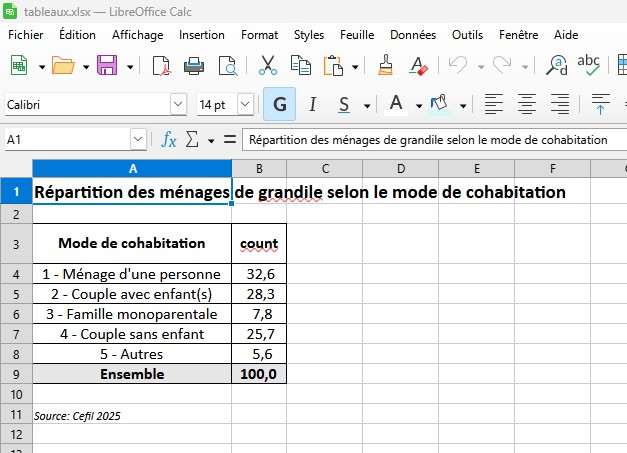

library('dplyr')
library('tabloid')
grandile <- readRDS('donnees/grandile.rds')
glimpse(grandile)Réaliser un tableau
Chargement des packages et des données
Nous aurons besoin des packages tabloid et dplyr pour le traitement des données (voir [1]).
Rows: 5,418
Columns: 10
$ IDENT <chr> "G0001", "G0002", "G0003", "G0004", "G0005", "G0006", "G000…
$ MODCOHA <chr> "4 - Couple sans enfant", "1 - Ménage d'une personne", "1 -…
$ NBPERS <int> 2, 1, 1, 2, 4, 2, 6, 4, 2, 3, 2, 2, 1, 1, 2, 3, 1, 4, 2, 4,…
$ NBPIECES <int> 4, 3, 1, 2, 5, 3, 4, 4, 5, 5, 3, 2, 2, 1, 2, 8, 3, 8, 5, 5,…
$ AGE <int> 59, 96, 41, 74, 38, 43, 67, 34, 53, 29, 33, 86, 69, 91, 59,…
$ DIPL <chr> "2 - BEPC, brevet des collèges", "6 - Diplôme universitaire…
$ PCS <chr> "5 - Employés", "7 - Inactifs ayant déjà travaillé", "4 - P…
$ ACT <chr> "4 - Tertiaire", "0 - Sans activité", "2 - Industrie", "0 -…
$ REVENU <int> 38062, 14155, 78049, 21418, 83738, 35527, 38543, 56133, 610…
$ PATRIMOINE <int> 569054, 412947, 1848967, 403576, 2138502, 991147, 745235, 6…Réaliser un tri à plat
Le package tabloid fournit un ensemble de fonctions utiles à la réalisation de tableaux statistiques. La première fonction à employer est tab_build().
La fonction tab_build()
Les paramètres:
var_rows: les variables de comptage ventilée en lignes,var_cols: les variables de comptage ventilée en colonnes,var_stat: la variable de comptage,stat: la statistique à utiliser (par défaut “count”):- “mean” : moyenne,
- “min” : minimum,
- “max” : maximum,
- “median” : médiane,
- “sum” : somme,
- “quantile” : quantile,
- “weighted_mean” : moyenne pondérée,
- “weighted_sum” : somme pondérée
var_w: la variable de pondération,probs: quantile à calculer sistatest “quantile”,lab_total: Le texte pour la marge (par défaut “Ensemble”)
On réalise un tri à plat sur la variable MODCOHA.
tab1 <- grandile %>%
tab_build(var_rows = MODCOHA)
tab1# A tibble: 6 × 2
MODCOHA count
<chr> <dbl>
1 4 - Couple sans enfant 1393
2 1 - Ménage d'une personne 1766
3 2 - Couple avec enfant(s) 1533
4 5 - Autres 303
5 3 - Famille monoparentale 423
6 Ensemble 5418
Ordre des modalités
On remarque que les modalités ne s’affichent pas dans l’ordre alphanumérique croissant. Il faut trier la table au préalable:
tab1 <- grandile %>%
arrange(MODCOHA) %>%
tab_build(var_rows = MODCOHA)
tab1# A tibble: 6 × 2
MODCOHA count
<chr> <dbl>
1 1 - Ménage d'une personne 1766
2 2 - Couple avec enfant(s) 1533
3 3 - Famille monoparentale 423
4 4 - Couple sans enfant 1393
5 5 - Autres 303
6 Ensemble 5418Profil colonne
La fonction tab_pct() calcule les profils lignes ou colonnes.
Pour un profil ligne
#| label: exemple-tabpct1
tab %>%
tab_pct(
pct = "row"
)Pour un profil colonne
#| label: exemple-tabpct1
tab %>%
tab_pct(
pct = "col"
)Transformons notre tableau de comptage en calculant les parts de chaque modalités dans la population de Grandile:
tab1b <- tab1 %>%
tab_pct(
pct = "col"
)
tab1b# A tibble: 6 × 2
MODCOHA count
<chr> <dbl>
1 1 - Ménage d'une personne 32.6
2 2 - Couple avec enfant(s) 28.3
3 3 - Famille monoparentale 7.81
4 4 - Couple sans enfant 25.7
5 5 - Autres 5.59
6 Ensemble 100 Affichage d’arrondis
La fonction tab_round() permet d’arrondir les données des cellules, et éventuellement de gérer la cohérence des sommes à 100 % pour les pourcentages lignes et colonnes, en proposant différentes règles de décision.
Mise en garde
tab_round(
tab,
n = 0,
guarantee_100 = FALSE,
option = "lowest_lie",
verbose = FALSE
)n: indique le nombre de décimales à afficherguarantee_100: gère la cohérence des arrondisoption: comment la garantie à 100 va être supportéeverbose: affiche dans la console des informations sur le traitement
Arrondissons le tableau précédent à une décimale:
tab1c <- tab1b %>%
tab_round(
n = 1
)
tab1c# A tibble: 6 × 2
MODCOHA count
* <chr> <dbl>
1 1 - Ménage d'une personne 32.6
2 2 - Couple avec enfant(s) 28.3
3 3 - Famille monoparentale 7.8
4 4 - Couple sans enfant 25.7
5 5 - Autres 5.6
6 Ensemble 100
Astuce
La console n’affiche pas toutes les décimales, par exemple:
tab1b %>%
tab_round(
n = 3
) # A tibble: 6 × 2
MODCOHA count
* <chr> <dbl>
1 1 - Ménage d'une personne 32.6
2 2 - Couple avec enfant(s) 28.3
3 3 - Famille monoparentale 7.81
4 4 - Couple sans enfant 25.7
5 5 - Autres 5.59
6 Ensemble 100 Il faut préciser le nombre de chiffres affichés (par exemple 7) grâce à la commande pillar::pillar_options() (voir [2]). La commande options(old) permet de revenir au paramétrage initial.
old <- options(pillar.sigfig = 7)
tab1b %>%
tab_round(
n = 3,
guarantee_100 = FALSE
) # A tibble: 6 × 2
MODCOHA count
* <chr> <dbl>
1 1 - Ménage d'une personne 32.595
2 2 - Couple avec enfant(s) 28.295
3 3 - Famille monoparentale 7.807
4 4 - Couple sans enfant 25.711
5 5 - Autres 5.592
6 Ensemble 100 options(old)Masquer des cellules
La fonction tab_mask() permet de masquer les cellules d’un tableau : - les cellules non-nulles inférieures à un seuil, en nombre de lignes ou en somme de la variable var_stat - les cellules correspondant aux marges
tab_mask(
tab,
threshold_count = NULL,
threshold_sum = NULL,
mask_total = "",
verbose = TRUE
)threshold_count: nombre de lignes de la table initiale en-deça duquel la valeur est masquée (exclusif)threshold_sum: à renseigner pourstat = sum, valeur de la cellule en-deça de laquelle la valeur est masquée (exclusif)mask_total: masquage ou non des totaux:- “cols” : masquage des totaux en colonnes
- “rows” : masquage des totaux en lignes
- c(“rows”, “cols”) : masquage de l’ensemble des totaux
verbose: affichage ou non du nombre de cellules masquées par la fonction
Masquons les modalités comprenant moins de 500 individus, sans masquer le total:
tab1 %>%
tab_mask(
threshold_count = 500
)# A tibble: 6 × 2
MODCOHA count
<chr> <dbl>
1 1 - Ménage d'une personne 1766
2 2 - Couple avec enfant(s) 1533
3 3 - Famille monoparentale NA
4 4 - Couple sans enfant 1393
5 5 - Autres NA
6 Ensemble 5418Exporter un tableau
Le package présente deux options pour exporter les tableaux générés.
Export vers Calc
La fonction tab_xlsx() permet d’enregistrer le tableau mis en forme dans un fichier .xlsx.
tab_xlsx(
tab,
path,
sheet,
title = "",
note = "",
lab_rows = NULL,
lab_cols = NULL,
open_wb = TRUE,
update = TRUE
)path: chemin dans lequel exporter le tableausheet: nom de l’onglet dans le classeur - si l’onglet existe déjà, il sera mis à jour avec update = TRUEtitle: titrenote: note de bas de pagelab_rows: nouveaux libellés pour les variables ligneslab_cols: nouveaux libellés pour les modalités des variables colonnesopen_wb: ouverture du classeur crée pour visualisationupdate: mise à jour de l’onglet s’il existe déjà dans le classeur (attention, par défaut: TRUE ce qui écrasera les versions existantes)
Exportons notre tableau dans un sous répertoire. Donnons lui un titre, une source et modifions le nom de la variable MODCOHA en Mode de cohabitation.
if(!dir.exists("_sorties")){dir.create("_sorties")}
tab1c %>%
tab_xlsx(
path = "_sorties/tableaux.xlsx",
sheet = "MODCOHA",
title = "Répartition des ménages de Grandile selon le mode de cohabitation",
note = "Source: Cefil 2025",
lab_rows = "Mode de cohabitation"
)Le résultat:

Document Quarto
Il suffit d’inclure la fonction tab_render() à la suite de la production du tableau dans un chunk. Par exemple, le tri à plat des ménages de Grandile par mode de cohabitation.
tab1 %>%
rename(Effectif = count) %>%
left_join(
tab1b %>%
tab_round(
n = 1
) %>%
rename('Part (en %)' = count)
) %>%
tab_render(
title = "Répartition des ménages de Grandile selon le mode de cohabitation",
note= "Source: Cefil 2025",
lab_rows = "Mode de cohabitation"
)| Mode de cohabitation | Effectif | Part (en %) |
|---|---|---|
| 1 - Ménage d'une personne | 1 766 | 32,6 |
| 2 - Couple avec enfant(s) | 1 533 | 28,3 |
| 3 - Famille monoparentale | 423 | 7,8 |
| 4 - Couple sans enfant | 1 393 | 25,7 |
| 5 - Autres | 303 | 5,6 |
| Ensemble | 5 418 | 100,0 |
| Source: Cefil 2025 |
Tableaux de contingence
Une table de contingence est un moyen pour présenter simultanément et de manière croisée deux données statistiques. Elle permet d’estimer la dépendance et la relation entre deux caractères observés sur une même population. Le tableau à double entrée est utilisé pour rassembler les effectifs partiels.
Croisement entre le diplôme et la PCS
tab2 <- grandile %>%
arrange(DIPL, PCS) %>%
tab_build(
var_rows = DIPL,
var_cols = PCS
)
tab2# A tibble: 8 × 10
DIPL 1 - Agriculteurs exp…¹ 2 - Artisans, commer…² 3 - Cadres, professi…³
<chr> <dbl> <dbl> <dbl>
1 "0 - Auc… 28 39 3
2 "1 - Cer… 10 25 13
3 "2 - BEP… 19 17 11
4 "3 - CAP… 19 84 35
5 "4 - Bac… 7 41 65
6 "5 - Dip… 3 37 108
7 "6 - Dip… 1 28 285
8 "Ensembl… 87 271 520
# ℹ abbreviated names: ¹`1 - Agriculteurs exploitants`,
# ²`2 - Artisans, commerçants, chefs d'entreprise`,
# ³`3 - Cadres, professions intellectuelles supérieures`
# ℹ 6 more variables: `4 - Professions intermédiaires` <dbl>,
# `5 - Employés` <dbl>, `6 - Ouvriers` <dbl>,
# `7 - Inactifs ayant déjà travaillé` <dbl>,
# `8 - Autres sans activité professionnelle` <dbl>, Ensemble <dbl>et leur profil ligne, permettant de voir les surreprésentations des diplômés dans les PCS.
tab2b <- tab2 %>%
tab_pct(pct = "row") %>%
tab_round(n = 1)
tab2b %>%
tab_render()| DIPL | 1 - Agriculteurs exploitants | 2 - Artisans, commerçants, chefs d'entreprise | 3 - Cadres, professions intellectuelles supérieures | 4 - Professions intermédiaires | 5 - Employés | 6 - Ouvriers | 7 - Inactifs ayant déjà travaillé | 8 - Autres sans activité professionnelle | Ensemble |
|---|---|---|---|---|---|---|---|---|---|
| 0 - Aucun diplôme | 2,6 | 3,6 | 0,3 | 3,5 | 5,6 | 14,7 | 61,5 | 8,2 | 100 |
| 1 - Certificat d'études primaires | 1,7 | 4,2 | 2,2 | 8,1 | 8,1 | 13,1 | 52,9 | 9,7 | 100 |
| 2 - BEPC, brevet des collèges | 3,6 | 3,2 | 2,1 | 11,3 | 12,3 | 43,0 | 16,0 | 8,5 | 100 |
| 3 - CAP, BEP | 1,6 | 7,0 | 2,9 | 8,5 | 19,1 | 31,0 | 22,7 | 7,3 | 100 |
| 4 - Baccalauréat général, technologique ou professionnel | 0,8 | 4,8 | 7,6 | 35,4 | 13,2 | 15,6 | 11,3 | 11,2 | 100 |
| 5 - Diplôme universitaire de 1er cycle, BTS, DUT | 0,5 | 6,7 | 19,5 | 19,5 | 11,6 | 9,4 | 20,8 | 11,9 | 100 |
| 6 - Diplôme universitaire de 2ème ou 3ème cycle | 0,2 | 4,6 | 47,0 | 17,5 | 6,9 | 4,6 | 13,2 | 5,9 | 100 |
| Ensemble | 1,6 | 5,0 | 9,6 | 14,1 | 11,5 | 19,4 | 30,0 | 8,8 | 100 |
Tableaux d’indicateurs statistiques
Tableaux de cumuls
Calculons le nombre total de personnes, d’après la variable NBPERS, selon la PCS de la personne de référence du ménage.
tab3 <- grandile %>%
arrange(PCS) %>%
tab_build(var_rows = PCS,
var_stat = NBPERS,
stat = "mean") %>%
tab_round(n = 1)
tab3 %>%
tab_render()| PCS | mean |
|---|---|
| 1 - Agriculteurs exploitants | 2,5 |
| 2 - Artisans, commerçants, chefs d'entreprise | 2,5 |
| 3 - Cadres, professions intellectuelles supérieures | 2,6 |
| 4 - Professions intermédiaires | 2,5 |
| 5 - Employés | 2,6 |
| 6 - Ouvriers | 2,6 |
| 7 - Inactifs ayant déjà travaillé | 2,0 |
| 8 - Autres sans activité professionnelle | 1,9 |
| Ensemble | 2,3 |
Tableaux de moyennes
Calculons le revenu moyen des habitants, d’après la variable REVENU, selon la PCS de la personne de référence du ménage. On doit pondérer par le nombre de personnes composant le ménage.
tab4 <- grandile %>%
arrange(PCS) %>%
tab_build(
var_rows = PCS,
var_stat = REVENU,
var_w = NBPERS,
stat = "weighted_mean"
) %>%
tab_round(n = -2) # arrondi à la centaine d'€
tab4 %>%
tab_render()| PCS | weighted_mean |
|---|---|
| 1 - Agriculteurs exploitants | 47 400 |
| 2 - Artisans, commerçants, chefs d'entreprise | 132 400 |
| 3 - Cadres, professions intellectuelles supérieures | 121 300 |
| 4 - Professions intermédiaires | 62 600 |
| 5 - Employés | 36 700 |
| 6 - Ouvriers | 44 100 |
| 7 - Inactifs ayant déjà travaillé | 19 300 |
| 8 - Autres sans activité professionnelle | 14 600 |
| Ensemble | 50 700 |
Tableaux en évolution
Une seule variable d’interêt
Nous allons réaliser un tableau des populations des pays d’Europe de l’Ouest (région “Western Europe”) en 1990 et 2010 à partir des données de Gapminder (voir [3]).
Tout d’abord chargeons le jeu de données.
gapminder <- readRDS('donnees/gapminder.rds')
glimpse(gapminder)Rows: 10,545
Columns: 9
$ country <chr> "Albania", "Algeria", "Angola", "Antigua and Barbuda"…
$ year <dbl> 1960, 1960, 1960, 1960, 1960, 1960, 1960, 1960, 1960,…
$ infant_mortality <dbl> 115.40, 148.20, 208.00, NA, 59.87, NA, NA, 20.30, 37.…
$ life_expectancy <dbl> 62.87, 47.50, 35.98, 62.97, 65.39, 66.86, 65.66, 70.8…
$ fertility <dbl> 6.19, 7.65, 7.32, 4.43, 3.11, 4.55, 4.82, 3.45, 2.70,…
$ population <dbl> 1636054, 11124892, 5270844, 54681, 20619075, 1867396,…
$ gdp <dbl> NA, 13828152297, NA, NA, 108322326649, NA, NA, 966778…
$ continent <chr> "Europe", "Africa", "Africa", "Americas", "Americas",…
$ region <chr> "Southern Europe", "Northern Africa", "Middle Africa"…Construisons le tableau et affichons le:
tab5 <- gapminder %>%
filter(year %in% c(1990, 2010), region == "Western Europe") %>%
mutate(year = as.character(year)) %>%
arrange(country) %>%
tab_build(
var_rows = country,
var_cols = year,
var_stat = population,
stat = "sum")
tab5# A tibble: 8 × 4
country `1990` `2010` Ensemble
<chr> <dbl> <dbl> <dbl>
1 Austria 7706571 8391986 16098557
2 Belgium 9978241 10929978 20908219
3 France 56943299 62961136 119904435
4 Germany 78958237 80435307 159393544
5 Luxembourg 381787 507889 889676
6 Netherlands 14915139 16631571 31546710
7 Switzerland 6673920 7830534 14504454
8 Ensemble 175557194 187688401 363245595Nous disposons de la marge en colonne, qui n’a pas de sens pour une série chronologique. Heureusement, l’objet tab5 peut être modifié, car c’est un tibble !
tab5 <- tab5 %>%
select(-Ensemble)
tab5# A tibble: 8 × 3
country `1990` `2010`
<chr> <dbl> <dbl>
1 Austria 7706571 8391986
2 Belgium 9978241 10929978
3 France 56943299 62961136
4 Germany 78958237 80435307
5 Luxembourg 381787 507889
6 Netherlands 14915139 16631571
7 Switzerland 6673920 7830534
8 Ensemble 175557194 187688401C’est mieux, nous allons pouvoir effectuer un rendu dans le document:
tab5 %>%
tab_render(
title = "Évolution de la population des pays d'Europe de l'Ouest entre 1990 et 2010",
note = "Source: Gapminder",
lab_rows = "Pays"
)| Pays | 1990 | 2010 |
|---|---|---|
| Austria | 7 706 571 | 8 391 986 |
| Belgium | 9 978 241 | 10 929 978 |
| France | 56 943 299 | 62 961 136 |
| Germany | 78 958 237 | 80 435 307 |
| Luxembourg | 381 787 | 507 889 |
| Netherlands | 14 915 139 | 16 631 571 |
| Switzerland | 6 673 920 | 7 830 534 |
| Ensemble | 175 557 194 | 187 688 401 |
| Source: Gapminder |
Variables quantitatives
Vous aurez remarqué que nous avons transformé la variable year en variable catégorielle à l’aide de as.character(). En effet, tabloid ne permet pas de ventiler les individus selon des modalités quantitatives.
Deux variables d’interêt
Ce tableau affichera l’évolution du PIB (variable gdp) et du nombre d’habitants dans les pays de la région “Western Europe” en 1990 et en 2010.
On ne peut pas préciser plusieurs variables au paramètre var_stat =. On doit donc représenter une seule variable qui prendra plusieurs modalités. Par exemple une variable indic dont les valeurs seront dans une variable val qui sera la variable d’intérêt de tabloid.
Commençons par préparer les données à l’aide du package tidyr (voir [4]).
library('tidyr')
datatab6 <- gapminder %>%
tidyr::pivot_longer(cols = c(gdp, population), names_to = "indic", values_to = "val") %>%
filter(year %in% c(1990, 2010), region == "Western Europe") %>%
mutate(year = as.character(year)) %>%
arrange(country)library('tidyr')
datatab6 <- gapminder %>%
filter(year %in% c(1990, 2010), region == "Western Europe") %>%
tidyr::pivot_longer(cols = c(gdp, population), names_to = "indic", values_to = "val") %>%
mutate(year = as.character(year)) %>%
arrange(country)La fonction pivot_longer() transforme les données (plus exactement les colonnes gdp et population) ce qui nous sera utile lorsque l’on voudra utiliser tabloid. En effet, dans le code ci-dessous, vous remarquez que si les pays (classés par ordre alphabétique) sont en lignes (paramètre var_rows =), les colonnes prennent comme variable l’année (year) et l’indicateur (gdp ou population) transformé en longueur par pivot_longer(). On n’oubliera pas d’enlever toutes les colonnes dont le nom termine par “Ensemble”.
tab6 <- datatab6 %>%
tab_build(
var_rows = country,
var_cols = c(year, indic),
var_stat = val,
stat = "sum") %>%
select(-ends_with("Ensemble"))
tab6# A tibble: 8 × 5
country `1990_gdp` `1990_population` `2010_gdp` `2010_population`
<chr> <dbl> <dbl> <dbl> <dbl>
1 Austria 147353847860 7706571 223954137424 8391986
2 Belgium 186769011525 9978241 267143096398 10929978
3 France 1091598599817 56943299 1480999829195 62961136
4 Germany 1556954345661 78958237 2069464070055 80435307
5 Luxembourg 12401289199 381787 26516904700 507889
6 Netherlands 281955594047 14915139 441185443862 16631571
7 Switzerland 224773355504 6673920 294748691280 7830534
8 Ensemble 3501806043613 175557194 4804012172914 187688401On effectue un rendu du tableau:
tab6 %>%
tab_render(
title = "Évolution de la population et du PIB des pays d'Europe de l'Ouest entre 1990 et 2010",
note = "Source: Gapminder",
lab_rows = "Pays",
lab_cols = list(indic = c("PIB", "Population"))
)
1990
|
2010
|
|||
|---|---|---|---|---|
| Pays | PIB | Population | PIB | Population |
| Austria | 147 353 847 860 | 7 706 571 | 223 954 137 424 | 8 391 986 |
| Belgium | 186 769 011 525 | 9 978 241 | 267 143 096 398 | 10 929 978 |
| France | 1 091 598 599 817 | 56 943 299 | 1 480 999 829 195 | 62 961 136 |
| Germany | 1 556 954 345 661 | 78 958 237 | 2 069 464 070 055 | 80 435 307 |
| Luxembourg | 12 401 289 199 | 381 787 | 26 516 904 700 | 507 889 |
| Netherlands | 281 955 594 047 | 14 915 139 | 441 185 443 862 | 16 631 571 |
| Switzerland | 224 773 355 504 | 6 673 920 | 294 748 691 280 | 7 830 534 |
| Ensemble | 3 501 806 043 613 | 175 557 194 | 4 804 012 172 914 | 187 688 401 |
| Source: Gapminder | ||||
Série chronologique
Construisons un tableau des évolutions de l’espérance de vie (variable life_expectancy) entre 2000 et 2010. Pour construire la marge, nous calculerons la moyenne pondérée selon la population du pays.
tab7 <- gapminder %>%
filter(year %in% 2000:2010, region == "South America") %>%
mutate(year = as.character(year)) %>%
arrange(country) %>%
tab_build(
var_rows = country,
var_cols = year,
var_stat = life_expectancy,
stat = "weighted_mean",
var_w = population)
tab7# A tibble: 13 × 13
country `2000` `2001` `2002` `2003` `2004` `2005` `2006` `2007` `2008` `2009`
<chr> <dbl> <dbl> <dbl> <dbl> <dbl> <dbl> <dbl> <dbl> <dbl> <dbl>
1 Argent… 74.2 74.3 74.3 74.5 75 75.3 75.3 75.2 75.4 75.6
2 Bolivia 67.6 68.3 68.7 69.3 69.8 70.2 70.6 70.9 71.2 71.6
3 Brazil 70.7 71.1 71.4 71.7 72 72.4 72.7 73 73.2 73.4
4 Chile 77.3 77.4 77.7 77.8 78 78.2 78.2 78.3 78.5 78.5
5 Colomb… 73.3 73.5 73.7 74.5 74.7 75.1 75.3 75.9 76.2 76.2
6 Ecuador 73.2 73.4 73.6 73.7 73.9 74.1 74.3 74.5 74.7 74.9
7 Guyana 64.2 63.9 63.5 63.7 64.2 64.4 64.8 64.9 65 65.3
8 Paragu… 74.2 74.2 74.1 74.1 73.8 74 74 74 74 74
9 Peru 74.6 75.2 75.7 76.2 76.7 77.2 77.7 77.9 78.2 78.2
10 Surina… 69.7 69.5 69.4 69.5 69.7 69.9 70 70.1 70.2 70.5
11 Uruguay 74.6 74.8 75 75 75.3 75.5 75.7 75.7 76 76.2
12 Venezu… 73.8 73.8 73.8 73.5 74.3 74.6 74.5 74.4 74.2 74.4
13 Ensemb… 72.3 72.6 72.8 73.1 73.4 73.8 74.0 74.3 74.5 74.6
# ℹ 2 more variables: `2010` <dbl>, Ensemble <dbl>On arrondit à une décimale et on supprime la colonne Ensemble:
tab7 <- tab7 %>%
tab_round(n = 1) %>%
select(-ends_with("Ensemble"))
tab7# A tibble: 13 × 12
country `2000` `2001` `2002` `2003` `2004` `2005` `2006` `2007` `2008` `2009`
<chr> <dbl> <dbl> <dbl> <dbl> <dbl> <dbl> <dbl> <dbl> <dbl> <dbl>
1 Argent… 74.2 74.3 74.3 74.5 75 75.3 75.3 75.2 75.4 75.6
2 Bolivia 67.6 68.3 68.7 69.3 69.8 70.2 70.6 70.9 71.2 71.6
3 Brazil 70.7 71.1 71.4 71.7 72 72.4 72.7 73 73.2 73.4
4 Chile 77.3 77.4 77.7 77.8 78 78.2 78.2 78.3 78.5 78.5
5 Colomb… 73.3 73.5 73.7 74.5 74.7 75.1 75.3 75.9 76.2 76.2
6 Ecuador 73.2 73.4 73.6 73.7 73.9 74.1 74.3 74.5 74.7 74.9
7 Guyana 64.2 63.9 63.5 63.7 64.2 64.4 64.8 64.9 65 65.3
8 Paragu… 74.2 74.2 74.1 74.1 73.8 74 74 74 74 74
9 Peru 74.6 75.2 75.7 76.2 76.7 77.2 77.7 77.9 78.2 78.2
10 Surina… 69.7 69.5 69.4 69.5 69.7 69.9 70 70.1 70.2 70.5
11 Uruguay 74.6 74.8 75 75 75.3 75.5 75.7 75.7 76 76.2
12 Venezu… 73.8 73.8 73.8 73.5 74.3 74.6 74.5 74.4 74.2 74.4
13 Ensemb… 72.3 72.6 72.8 73.1 73.4 73.8 74 74.3 74.5 74.6
# ℹ 1 more variable: `2010` <dbl>tab7 %>%
tab_render(
title = "Évolution de l'espérance de vie en Amérique du Sud entre 2000 et 2010",
note = "Source: Gapminder",
lab_rows = "Pays"
)| Pays | 2000 | 2001 | 2002 | 2003 | 2004 | 2005 | 2006 | 2007 | 2008 | 2009 | 2010 |
|---|---|---|---|---|---|---|---|---|---|---|---|
| Argentina | 74,2 | 74,3 | 74,3 | 74,5 | 75,0 | 75,3 | 75,3 | 75,2 | 75,4 | 75,6 | 75,8 |
| Bolivia | 67,6 | 68,3 | 68,7 | 69,3 | 69,8 | 70,2 | 70,6 | 70,9 | 71,2 | 71,6 | 71,8 |
| Brazil | 70,7 | 71,1 | 71,4 | 71,7 | 72,0 | 72,4 | 72,7 | 73,0 | 73,2 | 73,4 | 73,6 |
| Chile | 77,3 | 77,4 | 77,7 | 77,8 | 78,0 | 78,2 | 78,2 | 78,3 | 78,5 | 78,5 | 78,5 |
| Colombia | 73,3 | 73,5 | 73,7 | 74,5 | 74,7 | 75,1 | 75,3 | 75,9 | 76,2 | 76,2 | 76,4 |
| Ecuador | 73,2 | 73,4 | 73,6 | 73,7 | 73,9 | 74,1 | 74,3 | 74,5 | 74,7 | 74,9 | 75,1 |
| Guyana | 64,2 | 63,9 | 63,5 | 63,7 | 64,2 | 64,4 | 64,8 | 64,9 | 65,0 | 65,3 | 65,5 |
| Paraguay | 74,2 | 74,2 | 74,1 | 74,1 | 73,8 | 74,0 | 74,0 | 74,0 | 74,0 | 74,0 | 74,0 |
| Peru | 74,6 | 75,2 | 75,7 | 76,2 | 76,7 | 77,2 | 77,7 | 77,9 | 78,2 | 78,2 | 78,4 |
| Suriname | 69,7 | 69,5 | 69,4 | 69,5 | 69,7 | 69,9 | 70,0 | 70,1 | 70,2 | 70,5 | 70,7 |
| Uruguay | 74,6 | 74,8 | 75,0 | 75,0 | 75,3 | 75,5 | 75,7 | 75,7 | 76,0 | 76,2 | 76,2 |
| Venezuela | 73,8 | 73,8 | 73,8 | 73,5 | 74,3 | 74,6 | 74,5 | 74,4 | 74,2 | 74,4 | 74,9 |
| Ensemble | 72,3 | 72,6 | 72,8 | 73,1 | 73,4 | 73,8 | 74,0 | 74,3 | 74,5 | 74,6 | 74,8 |
| Source: Gapminder |
Supprimer la ligne Ensemble
Cette marge régionale pose problème. En effet, l’hypothèse retenue est trop forte, il faudrait calculer l’espérance de vie de cet ensemble de pays en reprenant les structures de mortalité et en les agrégeant. On va supprimer cette ligne:
tab7 <- tab7 %>%
filter(country != "Ensemble")
tab7 %>%
tab_render(
title = "Évolution de l'espérance de vie en Amérique du Sud entre 2000 et 2010",
note = "Source: Gapminder",
lab_rows = "Pays"
)| Pays | 2000 | 2001 | 2002 | 2003 | 2004 | 2005 | 2006 | 2007 | 2008 | 2009 | 2010 |
|---|---|---|---|---|---|---|---|---|---|---|---|
| Argentina | 74,2 | 74,3 | 74,3 | 74,5 | 75,0 | 75,3 | 75,3 | 75,2 | 75,4 | 75,6 | 75,8 |
| Bolivia | 67,6 | 68,3 | 68,7 | 69,3 | 69,8 | 70,2 | 70,6 | 70,9 | 71,2 | 71,6 | 71,8 |
| Brazil | 70,7 | 71,1 | 71,4 | 71,7 | 72,0 | 72,4 | 72,7 | 73,0 | 73,2 | 73,4 | 73,6 |
| Chile | 77,3 | 77,4 | 77,7 | 77,8 | 78,0 | 78,2 | 78,2 | 78,3 | 78,5 | 78,5 | 78,5 |
| Colombia | 73,3 | 73,5 | 73,7 | 74,5 | 74,7 | 75,1 | 75,3 | 75,9 | 76,2 | 76,2 | 76,4 |
| Ecuador | 73,2 | 73,4 | 73,6 | 73,7 | 73,9 | 74,1 | 74,3 | 74,5 | 74,7 | 74,9 | 75,1 |
| Guyana | 64,2 | 63,9 | 63,5 | 63,7 | 64,2 | 64,4 | 64,8 | 64,9 | 65,0 | 65,3 | 65,5 |
| Paraguay | 74,2 | 74,2 | 74,1 | 74,1 | 73,8 | 74,0 | 74,0 | 74,0 | 74,0 | 74,0 | 74,0 |
| Peru | 74,6 | 75,2 | 75,7 | 76,2 | 76,7 | 77,2 | 77,7 | 77,9 | 78,2 | 78,2 | 78,4 |
| Suriname | 69,7 | 69,5 | 69,4 | 69,5 | 69,7 | 69,9 | 70,0 | 70,1 | 70,2 | 70,5 | 70,7 |
| Uruguay | 74,6 | 74,8 | 75,0 | 75,0 | 75,3 | 75,5 | 75,7 | 75,7 | 76,0 | 76,2 | 76,2 |
| Venezuela | 73,8 | 73,8 | 73,8 | 73,5 | 74,3 | 74,6 | 74,5 | 74,4 | 74,2 | 74,4 | 74,9 |
| Source: Gapminder |
Compléments sur la mise en forme
Utilisation de kableExtra pour mettre en forme un rendu html
L’objet généré par la fonction tab_render() étant un kable, on peut le modifier avec kableExtra et formater les cellules, en incluant des conditions, gérer les largeurs de colonnes, les notes de bas de tableau, les renvois, etc …(voir [5])
Par exemple, avec le Table 11 on peut ajouter:
library('kableExtra')
tab6 %>%
tab_render(
title = "Évolution de la population et du PIB des pays d'Europe de l'Ouest entre 1990 et 2010",
note = "Source: Gapminder",
lab_rows = "Pays",
lab_cols = list(indic = c("PIB", "Population"))
) %>%
column_spec(4:5, bold = T,background = "ivory2") %>%
row_spec(3, bold = TRUE, italic = TRUE, color = "white", background = "steelblue1")%>%
row_spec(4, color = "tan3")
1990
|
2010
|
|||
|---|---|---|---|---|
| Pays | PIB | Population | PIB | Population |
| Austria | 147 353 847 860 | 7 706 571 | 223 954 137 424 | 8 391 986 |
| Belgium | 186 769 011 525 | 9 978 241 | 267 143 096 398 | 10 929 978 |
| France | 1 091 598 599 817 | 56 943 299 | 1 480 999 829 195 | 62 961 136 |
| Germany | 1 556 954 345 661 | 78 958 237 | 2 069 464 070 055 | 80 435 307 |
| Luxembourg | 12 401 289 199 | 381 787 | 26 516 904 700 | 507 889 |
| Netherlands | 281 955 594 047 | 14 915 139 | 441 185 443 862 | 16 631 571 |
| Switzerland | 224 773 355 504 | 6 673 920 | 294 748 691 280 | 7 830 534 |
| Ensemble | 3 501 806 043 613 | 175 557 194 | 4 804 012 172 914 | 187 688 401 |
| Source: Gapminder | ||||
Utiliser gt() plutôt que tab_render()
On peut préférer gt (voir [6]) pour générer les rendus de tableaux, et ne conserver que la partie computationnelle de tabloid.
library('gt')tab5 %>%
gt() %>%
fmt_number(locale = "fr", decimals = 0) %>%
cols_label(
country = "Pays"
) %>%
tab_header(
title = "Évolution de la population des pays d'Europe de l'Ouest entre 1990 et 2010"
) %>%
tab_source_note(
source_note = "Source: Gapminder"
) %>%
tab_style(style = list(cell_fill(color = "lightgrey"), cell_text(weight = "bold")),
locations =list(cells_body(columns = "2010"), cells_body(rows = country == "Ensemble")))| Évolution de la population des pays d'Europe de l'Ouest entre 1990 et 2010 | ||
|---|---|---|
| Pays | 1990 | 2010 |
| Austria | 7 706 571 | 8 391 986 |
| Belgium | 9 978 241 | 10 929 978 |
| France | 56 943 299 | 62 961 136 |
| Germany | 78 958 237 | 80 435 307 |
| Luxembourg | 381 787 | 507 889 |
| Netherlands | 14 915 139 | 16 631 571 |
| Switzerland | 6 673 920 | 7 830 534 |
| Ensemble | 175 557 194 | 187 688 401 |
| Source: Gapminder | ||